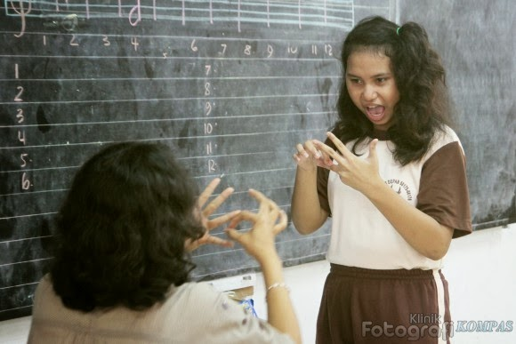

Kegiatan 1. Curah Pendapat
Bapak/Ibu, mari perhatikan gambar berikut dan jawablah beberapa pertanyaan pemantik yang diberikan melalui Tautan Aktivitas Curah Pendapat KB1

Gambar 1. Murid dengan Hambatan Pendengaran (sumber)
|
Kegiatan 2. Diskusi Klasifikasi dan Studi Kasus
Setelah mempelajari materi tentang karakteristik dan hambatan fungsional murid SLB, kini saatnya Bapak/Ibu melakukan diskusi dengan rekan sekelompok untuk menumbuhkan kesadaran tentang karakteristik hambatan setiap murid SLB yang ada di dalam kelas.
Langkah-langkah diskusi:
- Bentuk kelompok kecil (4-6 orang)
Cari teman terdekat dari Bapak/Ibu, lalu duduk melingkar di dalam kelompok.
Tunjuk satu ketua kelompok yang akan memoderatori jalannya diskusi. - Menonton Video
Video berikut akan menjadi bahan untuk didiskusikan bersama rekan sekelompok Anda. Bapak/Ibu, mari perhatikan video berikut.
Video Murid dengan Berbagai Hambatan
Tautan video di atas juga dapat Bapak/Ibu akses pada lampiran nomor 1. - Diskusikan pertanyaan-pertanyaan berikut.
- Apa saja karakteristik dari masing-masing murid yang ada di dalam video?
- Bagaimana cara Bapak/Ibu memfasilitasi pembelajaran untuk setiap murid dengan hambatan yang berbeda-beda?
- Catat poin-poin penting hasil diskusi
Simpulkan 3-5 poin singkat hasil dari diskusi kelompok, kemudian tuliskan pada media yang disediakan fasilitator. - Sampaikan hasil diskusi secara singkat
Apabila masih tersisa cukup waktu dan memungkinkan, tiap kelompok dapat berbagi hasil selama 1-2 menit.
Kegiatan 3. Penyusunan Ringkasan Profil Belajar Murid dengan Refleksi Berkesadaran
Bapak/Ibu, setelah menyelesaikan kegiatan curah pendapat dan diskusi, mari refleksikan diri melalui Tautan Refleksi KB1
Langkah-langkah:
- Ringkas salah satu tipe hambatan murid
Silakan pilih salah satu tipe hambatan murid, kemudian susunlah ringkasan profil murid yang dipilih dalam media yang disediakan fasilitator. - Refleksikan dengan pertanyaan-pertanyaan berikut.
- Apa hal yang membuat saya sadar tentang karakteristik dan hambatan murid tersebut?
- Bagaimana cara saya menghadapi dan memfasilitasi pembelajaran murid tersebut?
- Sampaikan hasil refleksi secara singkat.
Apabila masih tersisa cukup waktu dan memungkinkan, silakan 1-2 orang dapat mempresentasikan hasil refleksi selama 1-2 menit. - Fasilitator memberikan umpan balik terkait refleksi yang telah dilakukan.